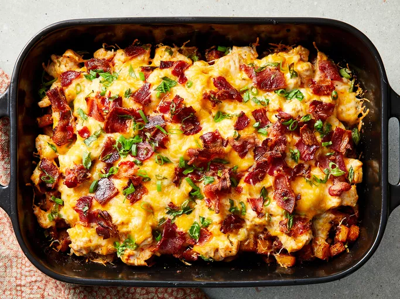

Buffalo Chicken Cassarole

The buffalo chicken cassarole my Mom made after following this recipe
Ingredients
- Hot pepper sauce
- Olive oil
- Garlic powder
- Paprika
- Salt
- Diced potatoes
- Diced chicken breast
- Mexican shredded cheese blend
- Bacon crumbles
- Diced green onions
Steps
- Preheat the oven to 500 degrees F (260 degrees C). Spray a 9x13-inch baking dish with cooking spray.
- Heat hot pepper sauce, olive oil, garlic powder, black pepper, paprika, and salt in a large skillet over low heat, stirring until thoroughly combined. Turn off heat.
- Toss potatoes in batches with the hot pepper sauce mixture to coat and use a slotted spoon to transfer potatoes to the prepared baking dish. Leave remaining sauce in the skillet.
- Mix chicken into remaining sauce and allow to marinate while potatoes roast.
- Bake potatoes until tender inside and crisp and brown outside, 45 to 50 minutes, stirring every 10 to 15 minutes.
- Reduce oven heat to 400 degrees F (205 degrees C).
- Spread chicken cubes over roasted potatoes.
- Sprinkle shredded cheese, cooked bacon, and green onions over chicken. Return to the oven.
- Bake in oven until chicken is cooked through and the cheese topping is bubbling, about 15 minutes.
Return to Homepage